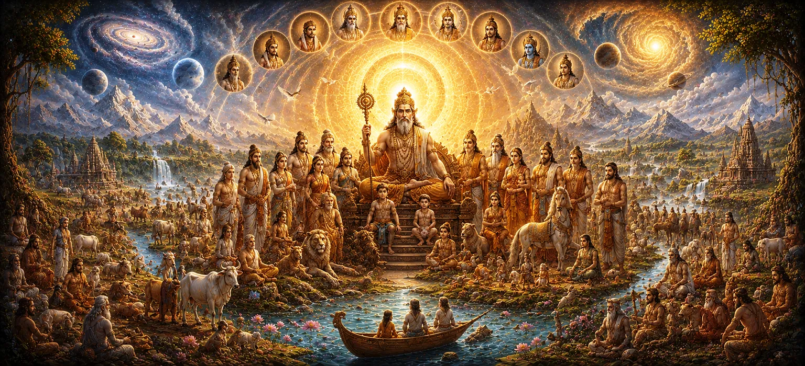

The Age and Lineage of Vaivasvata Manu
In Chapter 35 of Uma Samhita, following the broad overview of the fourteen cosmic Manvantaras, the narrative narrows its focus to the current seventh epoch governed by Vaivasvata Manu. This chapter details his divine parentage, his reign, and the foundational lineage from which contemporary humanity and great royal dynasties emerge.
As the son of Vivasvan (the Sun God), Vaivasvata Manu holds a pivotal position in Hindu cosmology. His era serves as the direct bridge connecting ancient cosmic creation accounts with the historical and genealogical records of the earth.
Through this sacred text, devotees explore how divine law, royal stewardship, and spiritual heritage intertwine under the supreme sovereignty of Lord Shiva to sustain righteousness across generations.
Chapter 35 Highlights
Solar Parentage
Explores the divine birth of Vaivasvata Manu as the illustrious son of the Sun God.
Current Manvantara
Details the characteristics and governance of our present active cosmic epoch.
Foundational Lineage
Traces the ancestral roots that branch into prominent earthly dynasties.
Stewardship of Dharma
Highlights Manu's duty in maintaining moral integrity and universal order.
Genealogical Bridge
Connects universal creation lore directly to human history and ancestry.
Divine Grace
Affirms that all genealogical epochs unfold under Lord Shiva's supreme will.
Core Topics in This Chapter
- 01 The Divine Birth and Identity of Vaivasvata Manu →
- 02 Characteristics of the Seventh Manvantara →
- 03 Origins of the Solar Dynasty (Suryavansha) →
- 04 Sages, Demigods, and Protectors of the Epoch →
- 05 Upholding Righteousness and Social Order →
- 06 The Progeny and Lineage Foundation →
- 07 Transition From Cosmic Lore to Human History →
- 08 Lord Shiva as the Ultimate Ruler of All Eras →
- 09 Preserving the Sacred Spiritual Heritage →
- 10 Bridging to the Nine Sons and Descendants →
The Divine Birth and Identity of Vaivasvata Manu
Chapter 35 opens by detailing the birth and identity of Vaivasvata Manu, who is born as the son of Vivasvan, the radiant Sun God. Because of his divine paternal heritage, he is known as Vaivasvata.
Unlike ordinary mortals, Manu possesses extraordinary spiritual vision, immense inner strength, and a profound commitment to maintaining cosmic and moral order.
His exalted status equips him to act as the supreme lawgiver and progenitor for the humanity of this ongoing age.
Characteristics of the Seventh Manvantara
The scripture describes the seventh Manvantara—our current epoch—highlighting the unique blend of spiritual opportunities and tests available to embodied souls during this cycle.
During this reign, various classes of deities, celestial protectors, and enlightened sages collaborate to guide humanity along the righteous path of spiritual evolution.
Understanding the nature of our epoch inspires seekers to utilize their human birth wisely for ultimate liberation.
Origins of the Solar Dynasty (Suryavansha)
Because Vaivasvata Manu is the direct offspring of the Sun God, his lineage forms the prestigious Solar Dynasty (Suryavansha), which later gave rise to legendary emperors, saints, and divine avatars.
The text traces the initial branches of this royal family tree, establishing the genetic and spiritual foundation for subsequent epochs of heroic rule.
This heritage symbolizes the descent of solar illumination and righteousness into earthly royal administration.
Sages, Demigods, and Protectors of the Epoch
Chapter 35 enumerates the specific assembly of Saptarishis, deities, and celestial guardians assigned to protect and guide the seventh Manvantara.
These divine figures work in perfect harmony with Manu to preserve Vedic knowledge, ensure seasonal balance, and uphold cosmic integrity.
Their collective efforts shield the world from excessive moral decay and sustain the possibility of spiritual awakening.
Upholding Righteousness and Social Order
The text emphasizes Manu's establishment of social duties (Varnasrama Dharma) and moral codes, which provide human society with the structure needed for harmonious coexistence.
By following these divinely sanctioned guidelines, individuals can fulfill their material responsibilities while steadily progressing toward spiritual liberation.
Manu's laws serve as an eternal reminder that true civilization is rooted in ethical integrity and spiritual alignment.
The Progeny and Lineage Foundation
The chapter outlines how Vaivasvata Manu's progeny form the foundational branches of human expansion, planting the seeds for diverse cultures, kingdoms, and spiritual traditions.
This detailed genealogy provides a seamless transition from macrocosmic creation to the intimate family histories of earthly monarchs.
Seekers recognize in these accounts the interconnectedness of all life under a single divine source.
Transition From Cosmic Lore to Human History
A key structural feature of Chapter 35 is its role as a bridge; it shifts the narrative focus from abstract universal eons to tangible terrestrial lineages.
This transition grounds cosmic philosophy in human experience, showing how grand spiritual truths manifest directly through the lives of kings and sages.
Readers gain a comprehensive view of how higher divine intentions shape concrete historical events.
Lord Shiva as the Ultimate Ruler of All Eras
Amidst the detailing of dynastic names and royal ancestors, the text consistently reminds devotees that Lord Shiva remains the supreme master and controller of all time.
Even the greatest monarchs and solar progenitors derive their authority and vital energy from His infinite cosmic grace.
Recognizing this supreme reality frees the spiritual aspirant from misplaced pride in worldly status.
Preserving the Sacred Spiritual Heritage
Chapter 35 underscores the importance of preserving ancestral wisdom and spiritual heritage across successive generations without distortion.
By recounting the lineage of Vaivasvata Manu, the Purana ensures that seekers understand the unbroken chain of guidance that sustains human civilization.
This heritage acts as a guiding beacon through the changing storms of material existence.
Bridging to the Nine Sons and Descendants
The chapter concludes by setting the stage for an in-depth exploration of Vaivasvata Manu's prominent progeny in the subsequent chapter.
By establishing Manu's overarching reign and general lineage here, the scripture prepares the reader to learn the specific names, deeds, and dynasties of his nine famous sons.
This seamless literary flow maintains the grandeur of the Purana's genealogical presentation.
Key Teachings of Chapter 35
Solar Progenitor
Vaivasvata Manu serves as the divine father and lawgiver of our current human epoch.
Royal Lineage Roots
His descent from the Sun God establishes the prestigious Solar Dynasty (Suryavansha).
Moral Framework
Manu institutes sacred laws and duties to guide human society toward righteousness.
The chapter bridges abstract cosmic creation lore with tangible earthly history.
Epoch Protection
Dedicated sages and deities collaborate with Manu to preserve universal order.
Ultimate Sovereignty
All temporal dynasties and cosmic epochs operate under Lord Shiva's supreme will.
Spiritual Reflection
Chapter 35 of Uma Samhita bridges the vast macrocosmic realms of time with the intimate reality of human lineage. By detailing the birth and reign of Vaivasvata Manu, the Purana reminds us that our presence in this current epoch is part of a carefully orchestrated divine plan. We are inheritors of a rich spiritual and moral heritage that extends back to the radiant Sun God and ultimately rests upon the supreme grace of Lord Shiva. Reflecting on this sacred lineage inspires us to honor our duties with integrity, uphold Dharma in our daily lives, and walk the path of spiritual awakening with steadfast devotion.
Living the Message of Chapter 35
Integrating the wisdom of this chapter involves recognizing the sacred responsibility we carry as participants in this human epoch. Honor your family and social duties as part of your spiritual discipline.
Cultivate inner radiance, clarity, and truthfulness, drawing inspiration from the solar heritage of Vaivasvata Manu.
Approach every daily action with the awareness that your life is sustained by divine grace, dedicating your efforts in loving surrender to Lord Shiva.
Key Spiritual Concepts
The seventh Manu, son of the Sun God, and the current progenitor of humanity.
The radiant Sun God, divine father of Vaivasvata Manu.
The prestigious Solar Dynasty originating from Vaivasvata Manu.
The cosmic epoch or reign presided over by a specific Manu.
The sacred social and moral duties instituted to guide human civilization.
The Seven Sages guiding spiritual wisdom during the seventh epoch.
Chapter Summary
Uma Samhita Chapter 35 provides a detailed account of the age, parentage, and foundational lineage of Vaivasvata Manu within the Shiva Purana. By establishing his identity as the son of the Sun God and outlining the characteristics of our current seventh Manvantara, the text bridges abstract cosmic creation lore with tangible earthly history and royal genealogies. The chapter highlights Manu's pivotal role in instituting moral codes and upholding Dharma, while consistently reminding devotees that all temporal dynasties and epochs operate under the supreme sovereignty and grace of Lord Shiva.
Frequently Asked Questions
① What is the primary topic of Uma Samhita Chapter 35?
Chapter 35 focuses on the age, reign, and foundational lineage of Vaivasvata Manu, the seventh Manu presiding over our current epoch.
② Who is Vaivasvata Manu?
Vaivasvata Manu is the son of Vivasvan (the Sun God) and the current cosmic progenitor and lawgiver of humanity in the ongoing Manvantara.
③ Why is Vaivasvata Manu's reign particularly significant for humans?
His epoch is the present active cycle in which contemporary human lineage, society, and moral codes are rooted.
④ How does this chapter connect to the solar dynasty?
It establishes the ancestral roots and royal heritage that branch out into the glorious solar dynasty (Suryavansha).
⑤ What role does Lord Shiva play in this cosmic lineage?
All royal dynasties, cosmic epochs, and progenitors operate under the supreme divine sovereignty and grace of Lord Shiva.
⑥ Why is studying ancestral lineages valuable for seekers?
Understanding historical and cosmic roots helps devotees appreciate the continuity of Dharma and their spiritual heritage.
“Rooted in solar radiance and guided by divine law, the lineage of Vaivasvata Manu flourishes under the eternal grace of Lord Shiva.”
Continue Through Uma Samhita
Chapter 35 details the age and lineage of Vaivasvata Manu. Continue into Chapter 36 to explore the nine sons and lineage of Vaivasvata Manu.